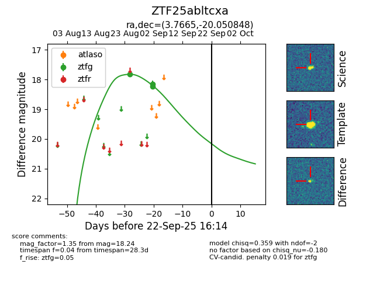
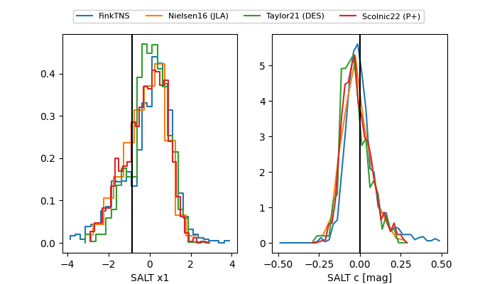

FINK: ZTF25abltcxa
Lasair: ZTF25abltcxa
ALeRCE: ZTF25abltcxa
ZTF25abltcxa (ztf,fink)
equatorial (ra, dec) = (3.7665,-20.05085)
galactic (l, b) = (71.3699,-79.07440)


last ztfg=18.24
3 ztfg detections